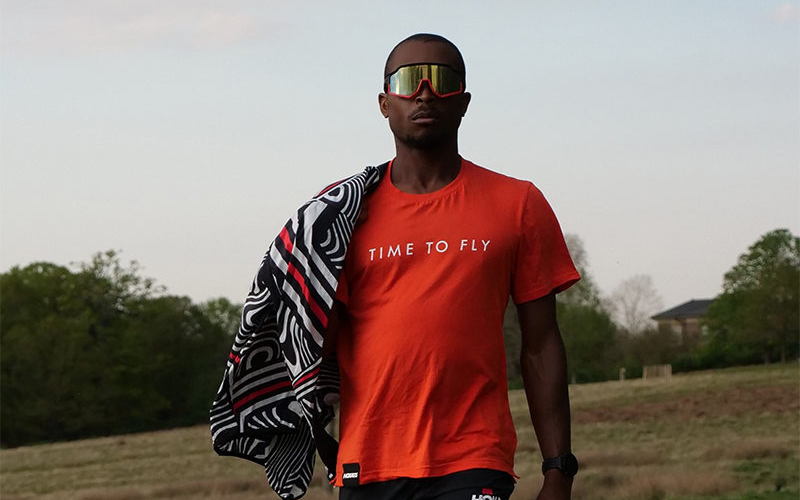
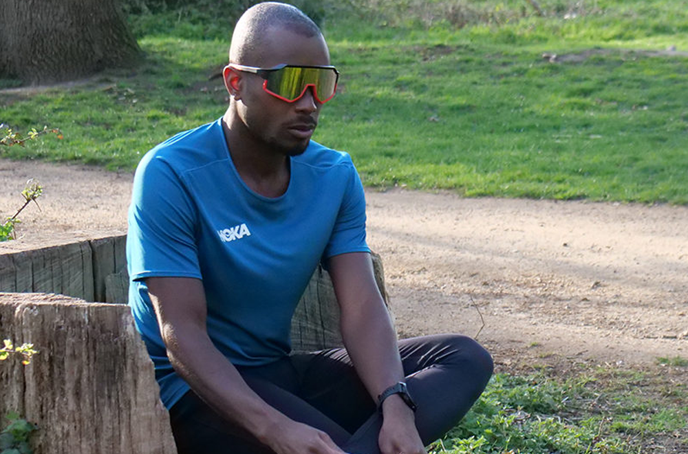
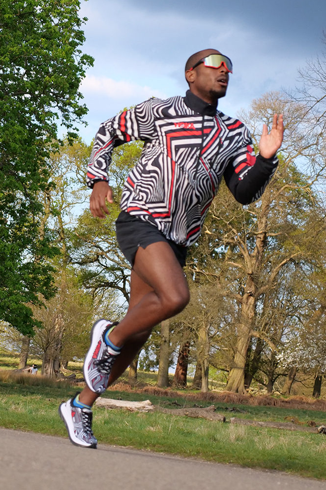

Autism Awareness Month: HOKA Global Athlete Ambassador Sam Holness
This blog is written by Sam's Mum and Dad about Sam's journey to becoming an elite triathlete with autism.
-

When Sam was diagnosed with autism, none of us knew or understood what it would mean for Sam. We didn't know what to plan for, or how his autism, his disability, would become the thing that would transform his life. No one knew that his autism would become his superpower or how it would become the catalyst for overcoming adversity or how sport would help to improve Sam's confidence and self-esteem and give him a purpose in life.
Autism is an intellectual disability that impacts the way that the diagnosed individual views the world. It is often said that when you meet an autistic person you will never meet another one like them. Autism is a lifelong disability, and although it's not curable, Sam has identified coping mechanisms to deal with his sensory and communication challenges. Sam was non-verbal until he was 6 years old, and his early communication technique was primarily hand gestures, like pointing at items he wanted.
A report by Karolinska Institute outlined that the life expectancy for adults on the spectrum is 54 years, and 39.6 years for those that have other conditions alongside Autism Spectrum Disorder (ASD).
However, many of the illnesses can be managed through an improved diet and exercise. Sam explains “before I decided to become a full-time athlete, I used to eat lots of junk food and too much sugary food. Now, because my nutrition is so important, I have more fruits, vegetables, fish, and white meat. I don't drink alcohol, take drugs, or gamble.” One of his key goals is to motivate others with autism to eat healthily and to help increase the life expectancy of people with autism to 60+.
-

When you see Sam doing his thing, be it swimming, running, cycling or working out in the gym, it's unlikely that you would think that he is autistic. At first glance, he looks just like any other athlete working out, but get a little closer and start speaking to him and you notice that there isn't a great deal of eye contact, and aside from saying hello there may not be a lot of verbal communication. One of the things about autism is that it is an invisible disability and it's difficult to determine if someone is autistic by what you see. However, what you will see is a highly dedicated sports-person, doing a tempo session on the treadmill, swimming for up 5km in the pool or completing 25km on the indoor rower. You are likely to see a focused person that isn't distracted by all the other things that are going on around him at the gym. Sam is happiest when he is training or racing.
Sam needs to manage his highly sensory reaction to loud noises, crowds, and new situations. When he was younger it was quite normal for Sam to find a quiet corner or put on his headphones to listen to Disney songs as a coping mechanism. Racing triathlons or running marathons can be daunting. Normally there are thousands of people huddled together waiting for the starting pistol to fire. “During the start of a race, I get very focused so that I can drown out the noise, and not think about being surrounded by thousands of people or being in a new location: I call it my 'FOCUS ZONE'. Once I have finished my race, I rarely speak to anyone and never shake hands because I am so exhausted.”
We never thought that Sam would have any athletic prowess due to his weak motor skills when he was young. A small task like catching a ball was, and still is, quite challenging. However, we understood the importance of having sport in his life for both his physical and mental wellbeing. To our surprise (and joy!), Sam learned to swim at just 3 years old. “Swimming is my favourite discipline in a triathlon” says Sam. “When I am in the water, I feel relaxed, there is no anxiety, and I forget that I have autism.”
-

Sam's love of sport motivated him to take up swimming, trampolining, ice hockey, archery, cycling and judo he is a brown belt before he started running and settled on triathlon as his chosen sport. His running technique was weak when joined the club, basically flopping around the running track not lifting his knees or using his arms during the drive phase or refusing to join-in with the rest of his team-mates. None of this was his fault, it was primarily because of the lack of proper muscle development, and no one had taught Sam how to run properly. His first 5k park run took about 35 minutes because he stopped running every time someone passed him; he didn't know how to judge his running pace. During his early races he would go too fast at the start and got tired before the end. However, Sam is tenacious; he has an innate “never say never” and “not quitting” approach to training and racing. “I am determined to not fail or DNF. I don't give up” says Sam. His current 5km PB is 17 minutes 30 seconds and dropping.
Being an athlete with autism is not without its challenges. Sam is now 29 years old and at the beginning of his endurance athletic career. Most elite triathletes start sports from the age of five or six, not twenty-three like Sam. Elite triathletes have a strong background in swim, bike, or run and have competed at junior, national and even Olympic levels before becoming a professional triathlete. Some people have questioned his ability to make this transition to elite status, but we believe that his determination, commitment, and resilience will ensure his success.
Running has become an important factor in Sam's life. He is either on his treadmill or doing hill reps or laps at his local running track clocking up the miles in his favourite HOKA running shoes. Triathlon is three disciplines; the run portion ranges from 5km for Sprint Triathlon to 42.2km for the full IRONMAN distance. Sam's focus is on the middle distance and long-distance events because he has an inherent ability to remain focused for long periods without being distracted. He also seems to have a high pain threshold.
Sam has an excellent opportunity to become a great endurance athlete, not only because of his hard work but because he possesses many of the traits of high-performance athletes bestowed on him by his autism. He is determined, focused and relentlessness, he is self-disciplined, humble, and resilient…we could add many others. As Sam's dad and coach, working with him is amazing. I describe Sam as the perfect athlete: he is never late, and he never cuts any training sessions. He was described as the Ronaldo of athletics by a journalist because as he is often the first athlete on the training field and the last one to leave.
-

“I am a triathlete with autism, rather than an autistic triathlete” is the way that Sam describes himself. The distinction is key because he knows that he will be autistic for the rest of his life but being an athlete will evolve.
“I like training: there is nothing better than getting up in the morning and putting on my running shoes and feeling the fresh air against my face and endorphins pumping through my body during long run.” Sam prefers running in the park and trail runs where there are fewer people as opposed to running on the road where there is the smell of car fumes and lots of people. He has invented a new running game when training at the track: “chase the rabbit.” Sam chases a runner in front of him to try and pass him/her within 800m after giving them a 50m to 100m head start. We think he likes this game because it's like one of those he plays on his computer!
Sam has set up an excellent structure for becoming an elite endurance athlete. He trains between 25 and 30 hours per week, including over 80km of running, 20km of swimming and 400km of cycling. “I train hard and never give up; I like training because its structured and repetitive and allows for mastery.” A typical training day for Sam starts with hill reps, his favourite running workout. “I name my hill reps after movies, The Dirty Dozen, The Ten Commandments, The Fantastic Four and so on.” Sam normally does his hill reps in the morning followed by an aerobic swim and a 20km run on the treadmill that evening.
He also loves yoga because it helps to reduce in the likelihood of injury and manages his anxiety. But he knows that he needs to go further to compete at the highest level, and has set himself goals that requires warm weather training, altitude training and working the with best nutritionists, physios and specialists in swim, bike, run and strength and conditioning. He knows that he is starting behind many of the elite triathletes but is confident that his hard work will prevail.
He made a great decision to become an endurance athlete as most endurance athletes seem to get faster as they get older. His goal of becoming the first Black Elite IRONMAN Triathlete with Autism in the world may sound pretty daunting, but we believe that he can accomplish this. His other goal is to use sport to raise the awareness of autism to the estimated 75 million people that have Autism Spectrum Disorder (ASD) and their families, globally. “Not enough is known about autism: it's not really a disability, it's that people with autism see the world differently, and we just solve problems differently,” says Sam. He wants those with autism to know that that they can be great athletes and wants to encourage them to get out there and get active.
When Sam was asked why someone with autism would decide to tackle one the world's toughest and most inspirational endurance sports, his response was simple. “Because I want to change the perception that the world has about people with autism, like me, and because I want to get healthier, and I want to win medals.”
Becoming an elite endurance athlete is a big deal for Sam because it will help to change perceptions that are held about people that are autistic like him. When he was at school, teachers told his parents not to expect Sam to speak, pass any exams or go to University, at school said that they should set their expectation low. But as Sam's parents, we didn't listen the school's advice; we believed in Sam, and knew that if we could motivate him and identify something that he was good at, then his opportunities would be limitless. We also knew that with hard work and commitment and love, that we could find a way to give Sam a full and rewarding life. We were right: Sam graduated from university with a degree in Sports Science, and he went on to become the first triathlete with autism to compete at the 2021 70.3 IRONMAN World Championships in Utah.
This is just the beginning of Sam's journey he recently completed his first competitive marathon in 3 hours 17 minutes, and plans to become the first openly autistic triathlete to compete at the IRONMAN European Championships in 2022. There's more: in August this year, Sam plans to compete, as possibly the first triathlete with Autism, at the Paratriathlon World Championships in Swansea. He loves breaking glass ceilings.
Looking towards the future, Sam plans to broaden his racing into trail running and UTMB. The great thing about triathlon and UTMB is that these are growing sports with a global appeal that will help Sam to raise the awareness about autism. There are two events that Sam would like to race at: the IRONMAN World Championships in Kona, Hawaii, and the UTMB World Championships in Chamonix, France. Sam says: “This would be magical and make me feel proud and prove that autism doesn't have to be a barrier to success. As a matter of fact, it can be a superpower.”